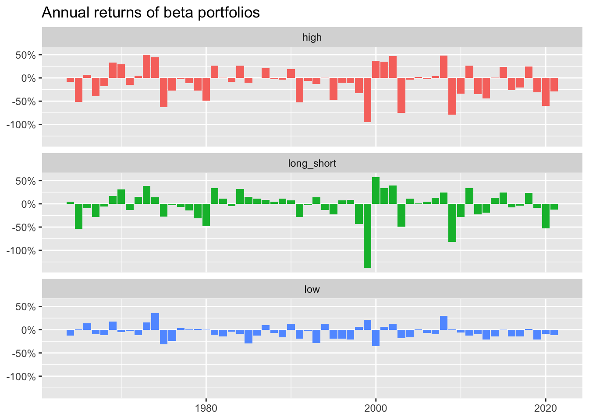

library(tidyverse)
library(DBI)
library(scales)
library(lmtest)
library(sandwich)5 Univariate Portfolio Sorts
5.1 Data Preparation
tidy_finance <- dbConnect(
duckdb::duckdb(),
"data/tidy_finance.duckdb",
read_only = TRUE)There are three tables used for this chapter. I defer the select() used with crsp_monthly in the book, as I find it more elegant to have a code chunk that just links to the database tables.
crsp_monthly <- tbl(tidy_finance, "crsp_monthly")
factors_ff_monthly <- tbl(tidy_finance, "factors_ff_monthly")
beta <- tbl(tidy_finance, "beta_alt")5.2 Sorting by Market Beta
beta_lag <-
beta |>
mutate(month = month + months(1)) |>
select(permno, month, beta_lag = beta_monthly) |>
filter(!is.na(beta_lag))
data_for_sorts <-
crsp_monthly |>
select(permno, month, ret_excess, mktcap_lag) |>
inner_join(beta_lag, by = c("permno", "month"))breakpoints <-
data_for_sorts |>
group_by(month) |>
summarize(breakpoint = median(beta_lag, na.rm = TRUE),
.groups = "drop")
beta_portfolios <-
data_for_sorts |>
inner_join(breakpoints, by = "month") |>
mutate(
portfolio = case_when(
beta_lag <= breakpoint ~ "low",
beta_lag > breakpoint ~ "high")) |>
filter(!is.na(ret_excess)) |>
group_by(month, portfolio) |>
summarize(ret = sum(ret_excess * mktcap_lag, na.rm = TRUE)/
sum(mktcap_lag, na.rm = TRUE),
.groups = "drop")5.3 Performance Evaluation
beta_longshort <-
beta_portfolios |>
pivot_wider(id_cols = month, names_from = portfolio, values_from = ret) |>
mutate(long_short = high - low) |>
collect()model_fit <- lm(long_short ~ 1, data = beta_longshort)
coeftest(model_fit, vcov = NeweyWest)
t test of coefficients:
Estimate Std. Error t value Pr(>|t|)
(Intercept) 0.00013932 0.00122740 0.1135 0.90975.4 Functional Programming for Portfolio Sorts
Using the ntile() function, the assign_portfolio() function can be reduced to a one-liner. As such there is no reason to have a function, but I have retained this to illustrate the use of the curly-curly operator as shown in the book.
assign_portfolio <- function(data, var, n_portfolios) {
mutate(data, portfolio = ntile({{ var }}, n_portfolios))
}Using a “data-frame-in-data-frame-out” function results in tidier code. Because the data are still in the database, we use our home-brewed alternative to weighted.mean() and defer the conversion of portfolio to a factor until we collect() the data below.
beta_portfolios <-
data_for_sorts |>
group_by(month) |>
assign_portfolio(var = beta_lag, 10) |>
group_by(portfolio, month) |>
summarize(ret = sum(ret_excess * mktcap_lag, na.rm = TRUE)/
sum(mktcap_lag, na.rm = TRUE),
.groups = "drop")5.5 More Performance Evaluation
Unlike the book, I use the coef() function here for a small amount of convenience.
beta_portfolios_summary <-
beta_portfolios |>
left_join(factors_ff_monthly, by = "month") |>
group_by(portfolio) |>
collect() %>%
mutate(portfolio = as.factor(portfolio)) |>
summarize(
alpha = coef(lm(ret ~ 1 + mkt_excess))[1],
beta = coef(lm(ret ~ 1 + mkt_excess))[2],
ret = mean(ret)
)beta_portfolios_summary |>
ggplot(aes(x = portfolio, y = alpha, fill = portfolio)) +
geom_bar(stat = "identity") +
labs(
title = "CAPM alphas of beta-sorted portfolios",
x = "Portfolio",
y = "CAPM alpha",
fill = "Portfolio"
) +
scale_y_continuous(labels = percent) +
theme(legend.position = "None")5.6 The Security Market Line and Beta Portfolios
Again I use the coef() function and I also extract the calculation stored in mean_mkt_excess upfront.
sml_capm <- coef(lm(ret ~ 1 + beta, data = beta_portfolios_summary))
mean_mkt_excess <-
factors_ff_monthly |>
summarize(mean(mkt_excess, na.rm = TRUE)) |>
pull()
beta_portfolios_summary |>
filter(!is.na(ret), !is.na(beta)) |>
ggplot(aes(
x = beta,
y = ret,
color = portfolio
)) +
geom_point() +
geom_abline(
intercept = 0,
slope = mean_mkt_excess,
linetype = "solid"
) +
geom_abline(
intercept = sml_capm[1],
slope = sml_capm[2],
linetype = "dashed"
) +
scale_y_continuous(
labels = percent,
limit = c(0, mean_mkt_excess * 2)
) +
scale_x_continuous(limits = c(0, 2)) +
labs(
x = "Beta", y = "Excess return", color = "Portfolio",
title = "Average portfolio excess returns and average beta estimates"
)The ungroup() shown in the book is not needed (because we used .groups = "drop") in the previous step.
beta_longshort <-
beta_portfolios |>
mutate(portfolio = case_when(
portfolio == max(as.numeric(portfolio)) ~ "high",
portfolio == min(as.numeric(portfolio)) ~ "low"
)) |>
filter(portfolio %in% c("low", "high")) |>
pivot_wider(id_cols = month, names_from = portfolio, values_from = ret) |>
mutate(long_short = high - low) |>
left_join(factors_ff_monthly, by = "month") %>%
collect()Warning: Missing values are always removed in SQL aggregation functions.
Use `na.rm = TRUE` to silence this warning
This warning is displayed once every 8 hours.coeftest(lm(long_short ~ 1, data = beta_longshort),
vcov = NeweyWest)
t test of coefficients:
Estimate Std. Error t value Pr(>|t|)
(Intercept) 0.0025049 0.0027347 0.916 0.36coeftest(lm(long_short ~ 1 + mkt_excess, data = beta_longshort),
vcov = NeweyWest)
t test of coefficients:
Estimate Std. Error t value Pr(>|t|)
(Intercept) -0.0043407 0.0018908 -2.2957 0.02199 *
mkt_excess 1.1755556 0.0662949 17.7322 < 2e-16 ***
---
Signif. codes: 0 '***' 0.001 '**' 0.01 '*' 0.05 '.' 0.1 ' ' 1We have already applied collect() to beta_longshort, so we can use R functions here. If beta_longshort were a remote data frame, not that dbplyr does not translate prod() for us, but we could use the product() aggregate from DuckDB.
beta_longshort |>
group_by(year = year(month)) |>
summarize(
low = prod(1 + low),
high = prod(1 + high),
long_short = prod(1 + long_short)
) |>
pivot_longer(cols = -year) |>
ggplot(aes(x = year, y = 1 - value, fill = name)) +
geom_col(position = "dodge") +
facet_wrap(~name, ncol = 1) +
theme(legend.position = "none") +
scale_y_continuous(labels = percent) +
labs(
title = "Annual returns of beta portfolios",
x = NULL, y = NULL
)
dbDisconnect(tidy_finance, shutdown = TRUE)